This library provides input/output blocks where every block is available in a continuous and a discrete (sampled) representation. A block is defined via its continuous parameterization. By specifying a discretization method and a sample time, the discrete representation is automatically derived from the continuous form. The defaults of the most important options for all blocks are set in the global SampleClock component (via inner/outer). As a result, it is, e.g., easy to switch quickly between a continuous and a discrete representation of all blocks of a controller.
Examples to demonstrate the technique are given in sublibrary Examples. Especially, the continuous or discrete control of a simple flexible drive with a P-PI cascade controller is demonstrated in example SimpleControlledDrive.
Extends from Modelica.Icons.Library (Icon for library).
| Name | Description |
|---|---|
| Users Guide | |
| Demonstrate the usage of package Controller | |
| Global options for blocks of Controller library (in particular sample clock) | |
| Sample the input signal if discrete block or y=u if continuous block | |
| Continuous or discrete state space system block | |
| Continuous or discrete, single input single output transfer function | |
| Continuous or discretized, single input single output block described by a ZerosAndPoles object | |
| Continuous or discretized analog low or high pass IIR-filter (CriticalDamping/Bessel/Butterworth/Chebyshev) | |
| Discrete finite impulse response low or high pass filter | |
| Output the integral of the input signal (continuous or discrete block) | |
| Approximate derivative (continuous or discrete block) | |
| First order (continuous or discrete) transfer function block (= 1 pole) | |
| Second order (continuous or discrete) transfer function block (= 2 poles) | |
| Proportional-Integral controller (continuous or discrete block) | |
| PID-controller in additive description form | |
| P, PI, PD, and PID controller with limited output, anti-windup compensation and setpoint weighting | |
| Delay the input by a multiple of the base sample time if discrete block or y=u if continuous block | |
| Analog to digital converter (including sampler) | |
| Digital to analog converter (including zero order hold) | |
| Interpolator | Increasing the sampling frequency with linear interpolation and optional mean value filtering |
| Output the product of a gain matrix with the input signal vector. The matrix can be loaded from a file optionally | |
| Block that generates a uniform distributed noise output signal at sample instants if discrete and y=0 if continuous | |
| Interfaces (partial blocks) of Controller library | |
| Internal blocks that are usually of no interest for the user | |
| Templates of control structures | |
| Constants and types with choices, especially to build menus | |
| DataDir=Modelica_LinearSystems2.DataDir | Absolute path to directory containing utilitiy files for this package, such as images |
constant String DataDir=Modelica_LinearSystems2.DataDir "Absolute path to directory containing utilitiy files for this package, such as images";
 Modelica_LinearSystems2.Controller.SampleClock
Modelica_LinearSystems2.Controller.SampleClock
Global block that defines options for all components of the Controller library that are on the same or on a lower level as the sampleClock component. In particular it is defined whether the blocks shall be used by default in a continuous or a discrete representation. In the latter case, the default discretization method and the base sample time is defined. The sample time of a block is an integer multiple of the base sample time defined in the SampleClock component.
| Type | Name | Default | Description |
|---|---|---|---|
| BlockType | blockType | Modelica_LinearSystems2.Cont... | Type of Sampled blocks (Continuous or Discrete) |
| Method | methodType | Modelica_LinearSystems2.Type... | Discretization method for discrete blocks |
| Time | sampleTime | 1 | Base sample time for discrete blocks [s] |
| Init | initType | Modelica_LinearSystems2.Cont... | Type of initialization of Sampled blocks |
block SampleClock
"Global options for blocks of Controller library (in particular sample clock)"
parameter Types.BlockType blockType=Modelica_LinearSystems2.Controller.Types.BlockType.Continuous
"Type of Sampled blocks (Continuous or Discrete)";
parameter Modelica_LinearSystems2.Types.Method methodType=
Modelica_LinearSystems2.Types.Method.Trapezoidal
"Discretization method for discrete blocks";
parameter Modelica.SIunits.Time sampleTime = 1
"Base sample time for discrete blocks";
parameter Types.Init initType=Modelica_LinearSystems2.Controller.Types.Init.SteadyState
"Type of initialization of Sampled blocks";
output Boolean sampleTrigger "Trigger that is true at every sampleTime";
equation
if blockType == Types.BlockType.Continuous then
sampleTrigger = false;
else
sampleTrigger = sample(sampleTime, sampleTime);
end if;
end SampleClock;
 Modelica_LinearSystems2.Controller.Sampler
Modelica_LinearSystems2.Controller.Sampler

If discrete block, the output y is sampled according to sample time sampleClock.sampleTime * sampleFactor, where sampleClock.sampleTime is defined globally in the outer component sampleClock and sampleFactor is an Integer parameter of component Sampler.
If continuous block, the output y is identical to the input u.
Extends from Interfaces.PartialSISO_equality (Partial Single Input Single Output (continuous or discrete) control block of Controller library where usually y=u if continuous block).
| Type | Name | Default | Description |
|---|---|---|---|
| BlockTypeWithGlobalDefault | blockType | Types.BlockTypeWithGlobalDef... | Type of block (Continuous/Discrete) |
| Integer | sampleFactor | 1 | Sample time = sampleFactor * sampleClock.sampleTime |
| Type | Name | Description |
|---|---|---|
| input RealInput | u | Continuous or discrete input signal of block |
| output RealOutput | y | Continuous or discrete output signal of block |
block Sampler
"Sample the input signal if discrete block or y=u if continuous block"
extends Interfaces.PartialSISO_equality;
protected
Internal.DiscreteSampler discretePart(sampleFactor=sampleFactor) if
not continuous "Discrete sampler";
equation
if continuous then
y = u;
else
connect(u,discretePart.u);
connect(y,discretePart.y);
end if;
end Sampler;
 Modelica_LinearSystems2.Controller.StateSpace
Modelica_LinearSystems2.Controller.StateSpace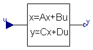
Extends from Interfaces.PartialSampledBlock (Partial block of Sampled library (icon + default parameters)).
| Type | Name | Default | Description |
|---|---|---|---|
| StateSpace | system | Continuous linear time-invariant system | |
| Advanced options | |||
| BlockTypeWithGlobalDefault | blockType | Types.BlockTypeWithGlobalDef... | Type of block (Continuous/Discrete) |
| MethodWithGlobalDefault | methodType | Types.MethodWithGlobalDefaul... | Type of discretization if discrete block |
| Integer | sampleFactor | 1 | Ts=sampleClock.sampleTime*sampleFactor |
| InitWithGlobalDefault | initType | Types.InitWithGlobalDefault.... | Type of initialization (no init/initial/steady state/output) |
| Real | x_start[nx] | zeros(nx) | Initial or guess values of states |
| Real | y_start[ny] | zeros(ny) | Initial values of outputs (remaining states are in steady state if possible) |
| Type | Name | Description |
|---|---|---|
| input RealInput | u[size(system.B, 2)] | Continuous or discrete input signals of block |
| output RealOutput | y[size(system.C, 1)] | Continuous or discrete output signals of block |
| output RealOutput | x[nx] | State vector of continuous system |
block StateSpace "Continuous or discrete state space system block"
parameter Modelica_LinearSystems2.StateSpace system(A=fill(0,0,0),B=fill(0,0,1),C=fill(0,1,0),D=fill(0,1,1))
"Continuous linear time-invariant system";
extends Interfaces.PartialSampledBlock;
parameter Real x_start[nx]=zeros(nx) "Initial or guess values of states";
parameter Real y_start[ny]=zeros(ny)
"Initial values of outputs (remaining states are in steady state if possible)";
Modelica.Blocks.Interfaces.RealInput u[size(system.B,2)]
"Continuous or discrete input signals of block";
Modelica.Blocks.Interfaces.RealOutput y[size(system.C,1)]
"Continuous or discrete output signals of block";
Modelica.Blocks.Interfaces.RealOutput x[nx](start=x_start)
"State vector of continuous system";
final parameter Integer nx = size(system.A,1);
final parameter Integer ny = size(system.C,1);
protected
parameter Boolean withDelay=false;
Internal.DiscreteStateSpace discretePart(
system=system,
withDelay=withDelay,
methodType=methodType,
sampleFactor=sampleFactor,
init=init,
x_start=x_start,
y_start=y_start) if not continuous "Discretized state space system";
equation
if continuous then
der(x) = system.A*x + system.B*u;
y = system.C*x + system.D*u;
end if;
connect(u, discretePart.u);
connect(x, discretePart.x);
connect(y, discretePart.y);
initial equation
if continuous then
if init == Types.Init.InitialState then
x = x_start;
elseif init == Types.Init.SteadyState then
der(x) = zeros(nx);
elseif init == Types.Init.InitialOutput then
// x = Modelica.Math.Matrices.equalityLeastSquares(system.A, -system.B*u, system.C, y_start - system.D*u);
y=y_start;
der(x[ny+1:nx]) = zeros(nx-ny);
end if;
end if;
end StateSpace;
 Modelica_LinearSystems2.Controller.TransferFunction
Modelica_LinearSystems2.Controller.TransferFunction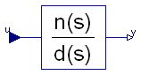
Extends from Modelica_LinearSystems2.Controller.Interfaces.PartialSISO2 (Partial Single Input Single Output (continuous or discrete) control block of Controller library).
| Type | Name | Default | Description |
|---|---|---|---|
| TransferFunction | system | Transfer function | |
| Advanced options | |||
| BlockTypeWithGlobalDefault | blockType | Types.BlockTypeWithGlobalDef... | Type of block (Continuous/Discrete) |
| MethodWithGlobalDefault | methodType | Types.MethodWithGlobalDefaul... | Type of discretization if discrete block |
| Integer | sampleFactor | 1 | Ts=sampleClock.sampleTime*sampleFactor |
| InitWithGlobalDefault | initType | Types.InitWithGlobalDefault.... | Type of initialization (no init/initial/steady state/output) |
| Real | x_start[nx] | zeros(nx) | Initial or guess values of states |
| Real | y_start | 0 | Initial value of output (derivatives of y are zero upto nx-1-th derivative) |
| Type | Name | Description |
|---|---|---|
| input RealInput | u | Continuous or discrete input signal of block |
| output RealOutput | y | Continuous or discrete output signal of block |
| output RealOutput | x[nx] | State of continuous transfer function |
block TransferFunction
"Continuous or discrete, single input single output transfer function"
import Modelica_LinearSystems2.Math.Polynomial;
import Modelica_LinearSystems2.StateSpace;
import Modelica_LinearSystems2.TransferFunction;
import Modelica_LinearSystems2;
extends Modelica_LinearSystems2.Controller.Interfaces.PartialSISO2(
discretePart(
x_start=x_start,
y_start={y_start},
ABCD=TransferFunction.Conversion.toMatrices(system)));
parameter Modelica_LinearSystems2.TransferFunction system "Transfer function";
parameter Real x_start[nx]=zeros(nx) "Initial or guess values of states";
parameter Real y_start=0
"Initial value of output (derivatives of y are zero upto nx-1-th derivative)";
final parameter Integer nx=size(system.d, 1) - 1;
Modelica.Blocks.Interfaces.RealOutput x[nx]
"State of continuous transfer function";
protected
parameter Boolean withDelay=false;
parameter Integer na=size(system.d, 1);
parameter Integer nb=size(system.n, 1);
Real a[na]=system.d "Reverse element order of system.denominator";
Real b[nb]=system.n;
Real bb[:]=vector([zeros(max(0, na - nb), 1); b]);
Real d=bb[1]/a[1];
Real a_end=if a[end] > 100*Modelica.Constants.eps*sqrt(a*a) then a[end] else 1.0;
Real x_scaled[size(x, 1)];//=x*a_end "Scaled vector x";
equation
x_scaled =x*a_end;
if continuous then
if nx == 0 then
y = d*u;
else
der(x_scaled[1]) = (-a[2:na]*x_scaled + a_end*u)/a[1];
der(x_scaled[2:nx]) = x_scaled[1:nx - 1];
y = ((bb[2:na] - d*a[2:na])*x_scaled)/a_end + d*u;
end if;
end if;
connect(y, discretePart.y[1]);
connect(x, discretePart.x);
initial equation
if continuous then
if init ==Modelica_LinearSystems2.Controller.Types.Init.SteadyState then
der(x_scaled) = zeros(nx);
elseif init ==Modelica_LinearSystems2.Controller.Types.Init.InitialState then
x_scaled = x_start*a_end;
elseif init ==Modelica_LinearSystems2.Controller.Types.Init.InitialOutput then
y = y_start;
der(x_scaled[2:nx]) = zeros(nx - 1);
end if;
end if;
end TransferFunction;
 Modelica_LinearSystems2.Controller.ZerosAndPoles
Modelica_LinearSystems2.Controller.ZerosAndPoles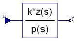
This function transforms a zeros-poles-gain system representation into state space representation. To achieve well numerical condition the ZerosAndPoles transfer function is transformed into state space form by creating first and second order blocks that are connected together in series. Every block is represented in controller canonical form and scaled such that the gain from the input of this block to its output is one (i.e. y(s=0) = u(s=0)), if this is possible. Details are given below.
The ZerosAndPoles transfer function is defined as:
product(s + n1[i]) * product(s^2 + n2[i,1]*s + n2[i,2])
y = k*--------------------------------------------------------- * u
product(s + d1[i]) * product(s^2 + d2[i,1]*s + d2[i,2])
This is treated as a series connection of first and second order systems. If size(n1) == size(d1) and size(n2) == size(d2) this gives the following sequence of operations:
s^2 + n2[1,1]*s + n2[1,2]
y_1 = ------------------------- * u
s^2 + d2[1,1]*s + d2[1,2]
s^2 + n2[2,1]*s + n2[2,2]
y_2 = ------------------------- * y_1
s^2 + d2[2,1]*s + d2[2,2]
...
s + n1[..]
y_n = ---------- * y_(n-1)
s + d1[..]
y = k*y_n
Based on this representation, evrey block with transfer function G(s) could be transformed into
G(s) = k * F(s)
with F(s) has unit gain. This leads to representations of the forms
a2 + a1*s + s^2 a2 b2 + a1*b2/a2*s + b2/a2*s^2
G(s) = -------------------- = ---- * ------------------------------ = k * F(s), k = a2/b2 (1)
b2 + b1*s + s^2 b2 b2 + b1*s + s^2
for second order systems and
a + s a b + b/a*s
G(s) = -------- = --- * ---------- = k * F(s), k = a/b
b + s b b + s
for first order systems respectively.
The complete system is now considered as the series connections of all the single unit gain transfer functions and an overall gain k with
k = product(ki).
In the general case, the following system structures and the corresponding state space systems can appear (note, 'c' is the reciprocal local gain 1/k):
(1)
a2 + a1*s + s^2 der(x1) = x2
y = --------------------- --> der(x2) = -b2*x1 - b1*x2 + b2*u
b2 + b1*s + s^2 y = c*((a2-b2)*x1 + (a1-b1)*x2 + u), c = b2/a2
(2)
s + a der(x1) = x2
y = ---------------- * u --> der(x2) = -b2*x1 - b1*x2 + b2*u
b2 + b1*s + s^2 y = k*(a1/b2*x1 +x2/b2), c = b2/a
(3)
1 der(x1) = x2
y = --------------- *u --> der(x2) = -b2*x1 - b1*x2 + b2*u
b2 + b1*s + s^2 y = c*x1/b2, c = b2
(4)
a + s der(x) = -b*x + b*u
y = ----- * u --> y = c*((a-b)/b*x + u), c = b/a
b + s
(5)
1
y = ----- * u --> der(x) = -b*x + b*u
b + s y = x, c = b
If the sizes of the numerator and denominator polynomials do not match, the small systems are built in the following way:
(1) Build systems of form (1) by combining
- 1 d2 and 1 n2
(= 1 second order denominator and 1 second order numerator) or
- 1 d2 and 2 n1 or
- 2 d1 and 1 n2
(2) Build at most one system of form (2) by combining
- 1 d2 and 1 n2
(3) Build systems of form (3) by
- 1 d2
(4) Build systems of form (4) by combining
- 1 d1 and 1 n1
(5) Build systems of form (5) by
- 1 d1
The numeric properties of the resulting state space system depends on which first and second order polynomials are combined and connected together. From a numerical point of view, it would therefore be useful to combine the polynomials based on the numeric values of the polynomial coefficients, (e.g., in a first step the polynomials could be sorted according to their cut-off frequency).
However, this has the disadvantage that the structure of the resulting state space system depends on the numeric values of the polynomial coefficients. Since Modelica environments perform symbolic pre-processing on equations, this would mean that a change of a polynomial coefficient requires to newly compile the state space system.
If, on the other hand, the structure of the state space system depends only on dimension information of the n1,n2,d1,d2 arrays, then the polynomial coefficients can be changed without a new translation of the model. This is the major reason why the structure of the state space system in the implementation of this block is based only on dimension information.
This is, e.g., not critical for the provided filters: The dimension of the n1,n2,d1,d2 arrays depend for filters only on the filter characteristics (Bessel, Butterworth etc.), the filter type (low pass, high pass etc.) and on the filter order. If any of this data is changed, the model has to be newly compiled. All the other filter data, such as cut-off frequency or ripple amplitude, can be changed without re-compilation of the model. The ZerosAndPoles transfer function is now constructed for the filters in such a way that the filter zeros and poles are appropriately sorted to give better numerical properties.
Another alternative implementation of the state space system would be to use the function controller canonical form that directly results from the transfer function. The severe disadvantage of this approach is that the structure of the state space system from above is lost for the symbolic preprocessing. If, e.g., index reduction has to be applied (e.g. since a filter is used to realize a non-linear inverse model), then the tool cannot perform the index reduction. Example:
Assume, a generic first order state space system is present
der(x) = a*x + b*u
y = c*x + d*u
and the values of the scalars a,b,c,d are parameters that might be changed before the simulation starts. If y has to be differentiated symbolically during code generation, then
der(y) = c*der(x) + d*der(u)
der(x) = a*x + b*u
As a result, u needs to be differentiated too, and this might not be possible and therefore translation might fail.
On the other hand, if the first order system is defined to be a low pass filter and the state space system is generated by keeping this structure, we have (see form (5) above):
der(x) = -b*x + u
y = x
Differentiating y symbolically leads to:
der(y) = der(x)
der(x) = -b*x + u
Therefore, in this case, the derivative of u is not needed and the tool can continue with the symbolic processing.
Extends from Modelica_LinearSystems2.Controller.Interfaces.PartialSISO2 (Partial Single Input Single Output (continuous or discrete) control block of Controller library).
| Type | Name | Default | Description |
|---|---|---|---|
| ZerosAndPoles | system | Data defining the ZerosAndPoles object | |
| Advanced options | |||
| BlockTypeWithGlobalDefault | blockType | Types.BlockTypeWithGlobalDef... | Type of block (Continuous/Discrete) |
| MethodWithGlobalDefault | methodType | Types.MethodWithGlobalDefaul... | Type of discretization if discrete block |
| Integer | sampleFactor | 1 | Ts=sampleClock.sampleTime*sampleFactor |
| InitWithGlobalDefault | initType | Types.InitWithGlobalDefault.... | Type of initialization (no init/initial/steady state/output) |
| Real | x_start[nx] | zeros(nx) | Initial or guess values of states |
| Real | y_start | 0 | Initial or guess values of output |
| Type | Name | Description |
|---|---|---|
| input RealInput | u | Continuous or discrete input signal of block |
| output RealOutput | y | Continuous or discrete output signal of block |
| output RealOutput | x[nx] | State of continuous block |
block ZerosAndPoles
"Continuous or discretized, single input single output block described by a ZerosAndPoles object"
import Modelica_LinearSystems2;
import Modelica_LinearSystems2.Types;
import Modelica_LinearSystems2.ZerosAndPoles;
import Modelica_LinearSystems2.Math.Complex;
extends Modelica_LinearSystems2.Controller.Interfaces.PartialSISO2(
discretePart(
x_start=x_start,
y_start={y_start},
ABCD=ZerosAndPoles.Conversion.toMatrices(system)));
parameter ZerosAndPoles system "Data defining the ZerosAndPoles object";
final parameter Integer nx=size(system.d1,1) + 2*size(system.d2,1)
"Number of states";
parameter Real x_start[nx] = zeros(nx) "Initial or guess values of states";
parameter Real y_start = 0 "Initial or guess values of output";
Modelica.Blocks.Interfaces.RealOutput x[nx] "State of continuous block";
protected
parameter Boolean withDelay=false;
parameter Integer n_num1 = size(system.n1,1);
parameter Integer n_num2 = size(system.n2,1);
parameter Integer n_den1 = size(system.d1,1);
parameter Integer n_den2 = size(system.d2,1);
parameter Integer n_num = n_num1 + 2*n_num2;
parameter Integer n_den = n_den1 + 2*n_den2;
parameter Integer i_d = if n_num2 > n_den2 then 2*(n_num2 - n_den2) + 1 else 1;
parameter Integer i_k = if n_num2 > n_den2 then n_den2 - (n_num2-n_den2) else n_den2;
parameter Real num[nx,2] = [system.n2;
[system.n1, zeros(n_num1)];
zeros(nx-n_num2-n_num1,2)]
"Numerator matrix, in order that indices are defined in all situations in all if clauses";
parameter Real den[nx,2] = [system.d2;
[system.d1, zeros(n_den1)];
zeros(nx-n_den2-n_den1,2)]
"Denominator matrix, in order that indices are defined in all situations in all if clauses";
Real uu[i_k + n_den1 + 1]
"Input signals into the connected first and second order blocks";
parameter Real k[size(uu,1)-1](each fixed = false)
"Additional factors of the first and second order blocks, in order that the gain of the blocks is 1";
parameter Real k_total=system.k/product(k);
initial equation
/* Compute scaling factor for every block in order that the gain of the block is 1.
The for blocks and the if-blocks have the same structure as in the
equation part below
*/
for i in 1:max(n_den2,n_num2) loop
// State space systems of order 2
if i <= n_den2 then
if i <= n_num2 then
// State space system in form (1)
k[i] = Modelica_LinearSystems2.Controller.Internal.scaleFactor2(
num[i, 1],
num[i, 2],
den[i, 1],
den[i, 2]);
elseif i-n_num2+1 <= n_num1 then
// State space system in form (1) with 2 first order numerator polynomials
k[i] = Modelica_LinearSystems2.Controller.Internal.scaleFactor2(
num[i, 1] + num[i + 1, 1],
num[i, 1]*num[i + 1, 1],
den[i, 1],
den[i, 2]);
elseif i-n_num2 == n_num1 then
// State space system in form (2) with 1 first order numerator polynomial
k[i] = Modelica_LinearSystems2.Controller.Internal.scaleFactor2(
0,
num[i, 1],
den[i, 1],
den[i, 2]);
else
// State space system in form (3)
k[i] = Modelica_LinearSystems2.Controller.Internal.scaleFactor2(
0,
0,
den[i, 1],
den[i, 2]);
end if;
else
// State space system in form (1) with 2 first order denominator polynomials
k[i] = Modelica_LinearSystems2.Controller.Internal.scaleFactor2(
num[i, 1],
num[i, 2],
den[i, 1] + den[i + 1, 1],
den[i, 1]*den[i + 1, 1]);
end if;
end for;
for i in i_d:n_den1 loop
// State space systems of order 1
if n_num2 <= n_den2 and 2*(n_den2-n_num2)+i <= n_num1 then
// State space system in form (4)
k[i_k + i] = Modelica_LinearSystems2.Controller.Internal.scaleFactor1(num[
max(1, n_num2 + 2*(n_den2 - n_num2) + i), 1], den[n_den2 + i, 1]);
elseif n_num2 > n_den2 and i-i_d+1 <= n_num1 then
// State space system in form (4)
k[i_k + i] = Modelica_LinearSystems2.Controller.Internal.scaleFactor1(num[
max(1, n_num2 + i - i_d + 1), 1], den[n_den2 + i, 1]);
else
// State space system in form (5)
k[i_k + i] = Modelica_LinearSystems2.Controller.Internal.scaleFactor1(0,
den[n_den2 + i, 1]);
end if;
end for;
equation
assert(n_num <= n_den, "ZerosAndPoles transfer function is not proper as required from StateSpace system:\n"
+ " numerator degree (= " + String(n_num) + ") <= denominator degree (= "
+ String(n_den) +") required.");
if continuous then
for i in 1:max(n_den2,n_num2) loop
// Construct state space systems of order 2
der(x[2*i-1]) = x[2*i];
if i <= n_den2 then
der(x[2*i]) = den[i,2]*uu[i] - den[i,2]*x[2*i-1] - den[i,1]*x[2*i];
if i <= n_num2 then
// State space system in form (1)
uu[i+1] = k[i]*(((num[i,2] - den[i,2])*x[2*i-1] +
(num[i,1] - den[i,1])*x[2*i])/den[i,2] + uu[i]);
elseif i-n_num2+1 <= n_num1 then
// State space system in form (1) with 2 first order numerator polynomials
uu[i+1] = k[i]*(((num[i,1]*num[i+1,1] - den[i,2])*x[2*i-1] +
(num[i,1]+num[i+1,1] - den[i,1])*x[2*i])/den[i,2] + uu[i]);
elseif i-n_num2 == n_num1 then
// State space system in form (2) with 1 first order numerator polynomial
uu[i+1] = k[i]*(num[i,1]*x[2*i-1] + x[2*i])/den[i,2];
else
// State space system in form (3)
uu[i+1] = k[i]*x[2*i-1]/den[i,2];
end if;
else
// State space system in form (1) with 2 first order denominator polynomials
der(x[2*i]) = den[i,1]*den[i,1]*uu[i] - (den[i,1]*den[i+1,1])*x[2*i-1]
- (den[i,1]+den[i+1,1])*x[2*i];
uu[i+1] = k[i]*(((num[i,2] - (den[i,1]*den[i+1,1]))*x[2*i-1] +
(num[i,1] - (den[i,1]+den[i+1,1]))*x[2*i])/den[i,1]/den[i,1] + uu[i]);
end if;
end for;
for i in i_d:n_den1 loop
// Construct state space systems of order 1
der(x[2*n_den2+i]) = den[n_den2+i,1]*(uu[i_k+i]-x[2*n_den2+i]);
if n_num2 <= n_den2 and 2*(n_den2-n_num2)+i <= n_num1 then
// State space system in form (4)
uu[i_k+i+1] = k[i_k+i]*((num[max(1,n_num2 + 2*(n_den2-n_num2)+i),1]-den[n_den2+i,1])*x[2*n_den2+i]/den[n_den2+i,1] + uu[i_k+i]);
elseif n_num2 > n_den2 and i-i_d+1 <= n_num1 then
// State space system in form (4)
uu[i_k+i+1] = k[i_k+i]*((num[max(1,n_num2 + i-i_d+1),1]-den[n_den2+i,1])*x[2*n_den2+i]/den[n_den2+i,1] + uu[i_k+i]);
else
// State space system in form (5)
uu[i_k+i+1] = k[i_k+i]*x[2*n_den2+i]/den[n_den2+i,1];
end if;
end for;
y = k_total*uu[i_k+n_den1+1];
else
for i in 1:size(uu, 1) - 1 loop
uu[i + 1] = u;
end for;
end if;
uu[1] = u;
connect(x, discretePart.x);
connect(y, discretePart.y[1]);
initial equation
if continuous then
if init ==Modelica_LinearSystems2.Controller.Types.Init.InitialState then
x = x_start;
elseif init ==Modelica_LinearSystems2.Controller.Types.Init.SteadyState then
der(x) = zeros(nx);
elseif init ==Modelica_LinearSystems2.Controller.Types.Init.InitialOutput then
y = y_start;
der(x[1:nx-1]) = zeros(nx-1);
end if;
end if;
end ZerosAndPoles;
 Modelica_LinearSystems2.Controller.Filter
Modelica_LinearSystems2.Controller.Filter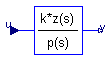
For details of the filter characteristics, see ZerosAndPoles.Design.filter.
Extends from ZerosAndPoles (Continuous or discretized, single input single output block described by a ZerosAndPoles object).
| Type | Name | Default | Description |
|---|---|---|---|
| ZerosAndPoles | system | system3 | Data defining the ZerosAndPoles object |
| AnalogFilter | analogFilter | Modelica_LinearSystems2.Type... | Analog filter characteristics (CriticalDamping/Bessel/Butterworth/Chebyshev) |
| FilterType | filterType | Modelica_LinearSystems2.Type... | Type of filter (LowPass/HighPass) |
| Integer | order | 2 | Order of filter |
| Frequency | f_cut | 1 | Cut-off frequency [Hz] |
| Real | gain | 1.0 | Gain (= amplitude of frequency response at zero frequency) |
| Boolean | normalized | true | = true, if amplitude of low pass filter at f_cut is 1/sqrt(2) (=3db) |
| Real | A_ripple | 0.5 | Pass band ripple for Chebyshev filter (otherwise not used) [dB] |
| Advanced options | |||
| BlockTypeWithGlobalDefault | blockType | Types.BlockTypeWithGlobalDef... | Type of block (Continuous/Discrete) |
| MethodWithGlobalDefault | methodType | Types.MethodWithGlobalDefaul... | Type of discretization if discrete block |
| Integer | sampleFactor | 1 | Ts=sampleClock.sampleTime*sampleFactor |
| InitWithGlobalDefault | initType | Types.InitWithGlobalDefault.... | Type of initialization (no init/initial/steady state/output) |
| Real | x_start[nx] | zeros(nx) | Initial or guess values of states |
| Real | y_start | 0 | Initial or guess values of output |
| Type | Name | Description |
|---|---|---|
| input RealInput | u | Continuous or discrete input signal of block |
| output RealOutput | y | Continuous or discrete output signal of block |
| output RealOutput | x[nx] | State of continuous block |
block Filter
"Continuous or discretized analog low or high pass IIR-filter (CriticalDamping/Bessel/Butterworth/Chebyshev)"
import Modelica_LinearSystems2.Types;
extends ZerosAndPoles(final system=system3);
parameter Modelica_LinearSystems2.Types.AnalogFilter analogFilter=
Modelica_LinearSystems2.Types.AnalogFilter.CriticalDamping
"Analog filter characteristics (CriticalDamping/Bessel/Butterworth/Chebyshev)";
parameter Modelica_LinearSystems2.Types.FilterType filterType=
Modelica_LinearSystems2.Types.FilterType.LowPass
"Type of filter (LowPass/HighPass)";
parameter Integer order(min=1) = 2 "Order of filter";
parameter Modelica.SIunits.Frequency f_cut=1 "Cut-off frequency";
parameter Real gain=1.0
"Gain (= amplitude of frequency response at zero frequency)";
parameter Boolean normalized=true
"= true, if amplitude of low pass filter at f_cut is 1/sqrt(2) (=3db)";
parameter Real A_ripple(unit="dB") = 0.5
"Pass band ripple for Chebyshev filter (otherwise not used)";
protected
parameter Modelica_LinearSystems2.ZerosAndPoles.Internal.ZerosAndPoles
system2 = Modelica_LinearSystems2.ZerosAndPoles.Internal.filter(
analogFilter=analogFilter,
filterType=filterType,
order=order,
f_cut=f_cut,
gain=gain,
A_ripple=A_ripple,
normalized=normalized) "Filter";
parameter Modelica_LinearSystems2.ZerosAndPoles system3(
k=system2.k,
n1=system2.n1,
n2=system2.n2,
d1=system2.d1,
d2=system2.d2);
end Filter;
 Modelica_LinearSystems2.Controller.FilterFIR
Modelica_LinearSystems2.Controller.FilterFIR

| Type | Name | Default | Description |
|---|---|---|---|
| BlockTypeWithGlobalDefault | blockType | Types.BlockTypeWithGlobalDef... | Type of block (Continuous/Discrete) |
| Integer | sampleFactor | 1 | Sample time = sampleFactor * sampleClock.sampleTime |
| FIRspec | specType | Modelica_LinearSystems2.Cont... | Specification type of FIR filter |
| Mean value filter | |||
| Integer | L | 2 | Length of mean value filter |
| FIR filter design | |||
| FilterType | filterType | Modelica_LinearSystems2.Type... | Type of filter |
| Integer | order | 2 | Order of filter |
| Frequency | f_cut | 1 | Cut-off frequency [Hz] |
| Window | window | Modelica_LinearSystems2.Cont... | Type of window |
| Real | beta | 2.12 | Beta-Parameter for Kaiser-window |
| FIR filter defined by coefficient vector | |||
| Real | a[:] | {1,1} | FIR filter coefficients |
| Type | Name | Description |
|---|---|---|
| input RealInput | u | Continuous or discrete input signal of block |
| output RealOutput | y | Continuous or discrete output signal of block |
block FilterFIR
"Discrete finite impulse response low or high pass filter"
import Modelica_LinearSystems2.Controller.Types.FIRspec;
import Modelica_LinearSystems2.Controller.Types.BlockType;
extends Interfaces.PartialSISO_equality;
parameter Modelica_LinearSystems2.Controller.Types.FIRspec specType=Modelica_LinearSystems2.Controller.Types.FIRspec.MeanValue
"Specification type of FIR filter";
parameter Integer L(min=2) = 2 "Length of mean value filter";
parameter Modelica_LinearSystems2.Types.FilterType filterType=
Modelica_LinearSystems2.Types.FilterType.LowPass "Type of filter";
parameter Integer order(min=1) = 2 "Order of filter";
parameter Modelica.SIunits.Frequency f_cut=1 "Cut-off frequency";
parameter Types.Window window=Modelica_LinearSystems2.Controller.Types.Window.Rectangle
"Type of window";
parameter Real beta=2.12 "Beta-Parameter for Kaiser-window";
parameter Real a[:]={1,1} "FIR filter coefficients";
protected
parameter Real a2[:]=Internal.FIR_coefficients(
specType,
L,
filterType,
order,
f_cut,
sampleClock.sampleTime*sampleFactor,
window,
beta,
a) if not continuous;
Internal.DiscreteFIR discretePart(
sampleFactor=sampleFactor,
a=a2) if not continuous "FIR realization";
equation
if continuous then
y = u;
end if;
connect(u,discretePart.u);
connect(y,discretePart.y);
end FilterFIR;
 Modelica_LinearSystems2.Controller.Integrator
Modelica_LinearSystems2.Controller.Integrator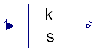
This blocks defines the transfer function between the input u and the output y as integrator:
k
y = --- * u
s
The block can be continuous or discrete (with continuous parameterization).
It is not possible to initalize a continuous integrator in steady state. For this reason, option "initType = SteadyState" is ignored for a continuous integrator block and interpreted as "initType = InitialState".
Extends from Interfaces.PartialSISO2 (Partial Single Input Single Output (continuous or discrete) control block of Controller library).
| Type | Name | Default | Description |
|---|---|---|---|
| Real | k | 1 | Integrator gain |
| Boolean | withDelay | false | |
| Advanced options | |||
| BlockTypeWithGlobalDefault | blockType | Types.BlockTypeWithGlobalDef... | Type of block (Continuous/Discrete) |
| MethodWithGlobalDefault | methodType | Types.MethodWithGlobalDefaul... | Type of discretization if discrete block |
| Integer | sampleFactor | 1 | Ts=sampleClock.sampleTime*sampleFactor |
| InitWithGlobalDefault | initType | Types.InitWithGlobalDefault.... | Type of initialization (no init/initial/steady state/output) |
| Real | y_start | 0 | Initial or guess value of output (=state) |
| Type | Name | Description |
|---|---|---|
| input RealInput | u | Continuous or discrete input signal of block |
block Integrator
"Output the integral of the input signal (continuous or discrete block)"
extends Interfaces.PartialSISO2(y(start=y_start), discretePart(
withDelay=withDelay,
x_start={y_start},
y_start={y_start},
ABCD=[0,k; 1,0]));
parameter Real k=1 "Integrator gain";
parameter Boolean withDelay=false if not continuous;
parameter Real y_start=0 "Initial or guess value of output (=state)";
equation
if continuous then
der(y) = k*u;
end if;
connect(y, discretePart.y[1]);
initial equation
if continuous then
if init == Types.Init.InitialState or init == Types.Init.InitialOutput then
y = y_start;
elseif init == Types.Init.SteadyState then
der(y) = 0;
end if;
end if;
end Integrator;
 Modelica_LinearSystems2.Controller.Derivative
Modelica_LinearSystems2.Controller.Derivative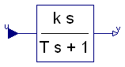
This blocks defines the transfer function between the input u and the output y as approximative derivative (DT1):
k * s
y = ------------ * u
T * s + 1
The block can be continuous or discrete (with continuous parameterization).
If k=0, the state space realization of the block is specially constructed, in order that the D-part of PID controllers can be set to zero without introducing numerical problems.
If you would like to be able to change easily between different
transfer functions (FirstOrder, SecondOrder, ... ) by changing
parameters, use the general model class TransferFunction
instead and model a DT1 system with parameters
n = {k,0}, d = {T,1}.
Extends from Interfaces.PartialSISO2 (Partial Single Input Single Output (continuous or discrete) control block of Controller library).
| Type | Name | Default | Description |
|---|---|---|---|
| Real | k | 1 | Gain |
| Time | T | 0.01 | Time Constant (T>0 required; T=0 is ideal derivative block) [s] |
| Advanced options | |||
| BlockTypeWithGlobalDefault | blockType | Types.BlockTypeWithGlobalDef... | Type of block (Continuous/Discrete) |
| MethodWithGlobalDefault | methodType | Types.MethodWithGlobalDefaul... | Type of discretization if discrete block |
| Integer | sampleFactor | 1 | Ts=sampleClock.sampleTime*sampleFactor |
| InitWithGlobalDefault | initType | Types.InitWithGlobalDefault.... | Type of initialization (no init/initial/steady state/output) |
| Real | x_start | 0 | Initial or guess value of state |
| Real | y_start | 0 | Initial or guess value of output |
| Type | Name | Description |
|---|---|---|
| input RealInput | u | Continuous or discrete input signal of block |
| output RealOutput | y | Continuous or discrete output signal of block |
| output RealOutput | x | State of approximative derivative |
block Derivative
"Approximate derivative (continuous or discrete block)"
extends Interfaces.PartialSISO2(discretePart(
y(start={y_start}),
x_start={x_start},
y_start={y_start},
ABCD=[-1/T,1/T; -k/T,k/T]));
parameter Real k=1 "Gain";
parameter Modelica.SIunits.Time T(min=Modelica.Constants.eps) = 0.01
"Time Constant (T>0 required; T=0 is ideal derivative block)";
parameter Real x_start=0 "Initial or guess value of state";
parameter Real y_start=0 "Initial or guess value of output";
Modelica.Blocks.Interfaces.RealOutput x(start=x_start)
"State of approximative derivative";
protected
parameter Boolean zeroGain = abs(k) < Modelica.Constants.eps
"= true, if k is considered to be zero";
equation
if continuous then
der(x) = if zeroGain then 0 else (u - x)/T;
y = if zeroGain then 0 else (k/T)*(u - x);
else
connect(x,discretePart.x[1]);
connect(y,discretePart.y[1]);
end if;
initial equation
if continuous then
if init == Types.Init.InitialState or zeroGain then
x = x_start;
elseif init == Types.Init.SteadyState then
der(x) = 0;
elseif init == Types.Init.InitialOutput then
if zeroGain then
x = u;
else
y = y_start;
end if;
end if;
end if;
end Derivative;
 Modelica_LinearSystems2.Controller.FirstOrder
Modelica_LinearSystems2.Controller.FirstOrder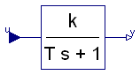
This blocks defines the transfer function between the input u and the output y as first order system:
k
y = --------- * u
T * s + 1
The block can be continuous or discrete (with continuous parameterization).
Extends from Interfaces.PartialSISO2 (Partial Single Input Single Output (continuous or discrete) control block of Controller library).
| Type | Name | Default | Description |
|---|---|---|---|
| Real | k | 1 | Gain |
| Real | T | 1 | Time Constant |
| Advanced options | |||
| BlockTypeWithGlobalDefault | blockType | Types.BlockTypeWithGlobalDef... | Type of block (Continuous/Discrete) |
| MethodWithGlobalDefault | methodType | Types.MethodWithGlobalDefaul... | Type of discretization if discrete block |
| Integer | sampleFactor | 1 | Ts=sampleClock.sampleTime*sampleFactor |
| InitWithGlobalDefault | initType | Types.InitWithGlobalDefault.... | Type of initialization (no init/initial/steady state/output) |
| Real | y_start | 0.0 | Initial y if initType=InitialState (else guess) |
| Type | Name | Description |
|---|---|---|
| input RealInput | u | Continuous or discrete input signal of block |
block FirstOrder
"First order (continuous or discrete) transfer function block (= 1 pole)"
extends Interfaces.PartialSISO2(y(start=y_start), discretePart(
x_start={y_start},
y_start={y_start},
ABCD=[-1/T,k/T; 1,0]));
parameter Real k = 1 "Gain";
parameter Real T = 1 "Time Constant";
parameter Real y_start = 0.0
"Initial y if initType=InitialState (else guess)";
equation
if continuous then
der(y) = (k*u - y)/T;
end if;
connect(y,discretePart.x[1]);
initial equation
if continuous then
if init == Types.Init.InitialState or init == Types.Init.InitialOutput then
y = y_start;
elseif init == Types.Init.SteadyState then
der(y) = 0;
end if;
end if;
end FirstOrder;
 Modelica_LinearSystems2.Controller.SecondOrder
Modelica_LinearSystems2.Controller.SecondOrder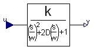
This blocks defines the transfer function between the input u and the output y as second order system:
k
y = --------------------------------- * u
( s / w )^2 + 2*D*( s / w ) + 1
The block can be continuous or discrete (with continuous parameterization).
If you would like to be able to change easily between different
transfer functions (FirstOrder, SecondOrder, ... ) by changing
parameters, use the general model class TransferFunction
instead and model a second order SISO system with parameters
n = {k}, d = {1/w^2, 2*D/w, 1}.
Example:
parameter: k = 0.3, w = 0.5, D = 0.4
results in:
0.3
y = ------------------- * u
4.0 s^2 + 1.6 s + 1
Extends from Interfaces.PartialSISO2 (Partial Single Input Single Output (continuous or discrete) control block of Controller library).
| Type | Name | Default | Description |
|---|---|---|---|
| Real | k | 1 | Gain |
| Real | w | 1 | Angular frequency |
| Real | D | 1 | Damping |
| Advanced options | |||
| BlockTypeWithGlobalDefault | blockType | Types.BlockTypeWithGlobalDef... | Type of block (Continuous/Discrete) |
| MethodWithGlobalDefault | methodType | Types.MethodWithGlobalDefaul... | Type of discretization if discrete block |
| Integer | sampleFactor | 1 | Ts=sampleClock.sampleTime*sampleFactor |
| InitWithGlobalDefault | initType | Types.InitWithGlobalDefault.... | Type of initialization (no init/initial/steady state/output) |
| Real | y_start | 0.0 | Initial or guess value of output (= state) |
| Real | yd_start | 0.0 | Initial or guess value of derivative of output (= state) |
| Type | Name | Description |
|---|---|---|
| input RealInput | u | Continuous or discrete input signal of block |
| output RealOutput | yd | First derivative of y |
| output RealOutput | yy[2] |
block SecondOrder
"Second order (continuous or discrete) transfer function block (= 2 poles)"
extends Interfaces.PartialSISO2(y(start=y_start), discretePart(
x_start={y_start,yd_start},
y_start={y_start},
ABCD=[[0,1; -w*w,-2*D*w],[0; w*w*k]; [1,0],[0]]));
Modelica.Blocks.Interfaces.RealOutput yd(start=yd_start)
"First derivative of y";
Modelica.Blocks.Interfaces.RealOutput yy[2]={y,yd};
parameter Real k=1 "Gain";
parameter Real w=1 "Angular frequency";
parameter Real D=1 "Damping";
parameter Real y_start=0.0 "Initial or guess value of output (= state)";
parameter Real yd_start=0.0
"Initial or guess value of derivative of output (= state)";
equation
if continuous then
der(y) = yd;
der(yd) = w*(w*(k*u - y) - 2*D*yd);
end if;
connect(yy, discretePart.x);
initial equation
if continuous then
if init == Types.Init.SteadyState then
der(y) = 0;
der(yd) = 0;
elseif init == Types.Init.InitialState then
y = y_start;
yd = yd_start;
elseif init == Types.Init.InitialOutput then
y = y_start;
yd = 0;
end if;
end if;
end SecondOrder;
 Modelica_LinearSystems2.Controller.PI
Modelica_LinearSystems2.Controller.PI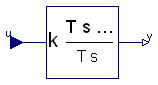
This blocks defines the transfer function between the input u and the output y as integrator:
1
y = k * (1 + ------ ) * u
T*s
T*s + 1
= k * --------- * u
T*s
The block can be continuous or discrete (with continuous parameterization).
It is not possible to initalize a continuous integrator in steady state. For this reason, option "initType = SteadyState" is ignored for a continuous PI block and interpreted as "initType = InitialState".
Extends from Interfaces.PartialSISO2 (Partial Single Input Single Output (continuous or discrete) control block of Controller library).
| Type | Name | Default | Description |
|---|---|---|---|
| Real | k | 1 | Gain |
| Time | T | 1 | Time Constant (T>0 required) [s] |
| Advanced options | |||
| BlockTypeWithGlobalDefault | blockType | Types.BlockTypeWithGlobalDef... | Type of block (Continuous/Discrete) |
| MethodWithGlobalDefault | methodType | Types.MethodWithGlobalDefaul... | Type of discretization if discrete block |
| Integer | sampleFactor | 1 | Ts=sampleClock.sampleTime*sampleFactor |
| InitWithGlobalDefault | initType | Types.InitWithGlobalDefault.... | Type of initialization (no init/initial/steady state/output) |
| Real | x_start | 0 | Initial or guess value of state |
| Real | y_start | 0 | Initial value of output |
| Type | Name | Description |
|---|---|---|
| input RealInput | u | Continuous or discrete input signal of block |
| output RealOutput | y | Continuous or discrete output signal of block |
| output RealOutput | x | State of block |
block PI
"Proportional-Integral controller (continuous or discrete block)"
extends Interfaces.PartialSISO2(discretePart(
x_start={x_start},
y_start={y_start},
ABCD=[0,1/T; k,k]));
parameter Real k=1 "Gain";
parameter Modelica.SIunits.Time T(min=Modelica.Constants.eps)=1
"Time Constant (T>0 required)";
parameter Real x_start=0 "Initial or guess value of state";
parameter Real y_start=0 "Initial value of output";
Modelica.Blocks.Interfaces.RealOutput x(start=x_start) "State of block";
equation
connect(y, discretePart.y[1]);
connect(x, discretePart.x[1]);
if continuous then
der(x) = u/T;
y = k*(x + u);
end if;
initial equation
if continuous then
if init == Types.Init.SteadyState then
der(x) = 0;
elseif init == Types.Init.InitialState then
x = x_start;
elseif init == Types.Init.InitialOutput then
y = y_start;
end if;
end if;
end PI;
 Modelica_LinearSystems2.Controller.PID
Modelica_LinearSystems2.Controller.PID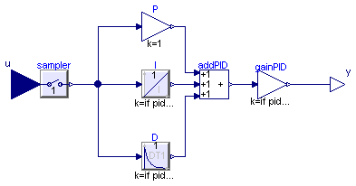
This is the text-book version of a PID-controller. For a more practically useful PID-controller, use block LimPID.
The PID block can be initialized in different ways controlled by parameter initType. The possible values of initType are defined in Modelica.Blocks.Types.InitPID. This type is identical to Types.Init, with the only exception that the additional option DoNotUse_InitialIntegratorState is added for backward compatibility reasons (= integrator is initialized with InitialState whereas differential part is initialized with NoInit which was the initialization in version 2.2 of the Modelica standard library).
Based on the setting of initType, the integrator (I) and derivative (D) blocks inside the PID controller are initialized according to the following table:
| initType | I.initType | D.initType |
| NoInit | NoInit | NoInit |
| SteadyState | SteadyState | SteadyState |
| InitialState | InitialState | InitialState |
| InitialOutput and initial equation: y = y_start |
NoInit | SteadyState |
| DoNotUse_InitialIntegratorState | InitialState | NoInit |
In many cases, the most useful initial condition is SteadyState because initial transients are then no longer present. If initType = InitPID.SteadyState, then in some cases difficulties might occur. The reason is the equation of the integrator:
der(y) = k*u;
The steady state equation "der(x)=0" leads to the condition that the input u to the integrator is zero. If the input u is already (directly or indirectly) defined by another initial condition, then the initialization problem is singular (has none or infinitely many solutions). This situation occurs often for mechanical systems, where, e.g., u = desiredSpeed - measuredSpeed and since speed is both a state and a derivative, it is natural to initialize it with zero. As sketched this is, however, not possible. The solution is to not initialize u or the variable that is used to compute u by an algebraic equation.
Extends from Interfaces.PartialSampledBlock (Partial block of Sampled library (icon + default parameters)).
| Type | Name | Default | Description |
|---|---|---|---|
| PID_representation | pidRep | Types.PID_representation.tim... | type of PID representation: k*(1 + 1/Ti/s + Td*s) or (kp + Ti/s + Td*s) |
| Real | k | 1 | Gain of controller |
| Time | Ti | Time constant of Integrator block [s] | |
| Time | Td | Time constant of Derivative block [s] | |
| Real | Nd | 10 | The higher Nd, the more ideal the derivative block |
| Real | kp | 1 | P part parameter of gain representation |
| Real | ki | 1 | I part parameter of gain representation |
| Real | kd | 1 | D part parameter of gain representation |
| Initialization | |||
| Real | xi_start | 0 | Initial or guess value value for integrator output (= integrator state) |
| Real | xd_start | 0 | Initial or guess value for state of derivative block |
| Real | y_start | 0 | Initial value of output |
| Advanced options | |||
| BlockTypeWithGlobalDefault | blockType | Types.BlockTypeWithGlobalDef... | Type of block (Continuous/Discrete) |
| MethodWithGlobalDefault | methodType | Types.MethodWithGlobalDefaul... | Type of discretization if discrete block |
| Integer | sampleFactor | 1 | Ts=sampleClock.sampleTime*sampleFactor |
| InitWithGlobalDefault | initType | Types.InitWithGlobalDefault.... | Type of initialization (no init/initial/steady state/output) |
| Type | Name | Description |
|---|---|---|
| input RealInput | u | Continuous or discrete input signal of block |
| output RealOutput | y | Continuous or discrete output signal of block |
block PID "PID-controller in additive description form" import Modelica_LinearSystems2.Controller.Types.InitWithGlobalDefault; extends Interfaces.PartialSampledBlock;Modelica.Blocks.Interfaces.RealInput u "Continuous or discrete input signal of block"; Modelica.Blocks.Interfaces.RealOutput y "Continuous or discrete output signal of block"; parameter Types.PID_representation pidRep=Types.PID_representation.timeConstants "type of PID representation: k*(1 + 1/Ti/s + Td*s) or (kp + Ti/s + Td*s)"; parameter Real k(min=0) = 1 "Gain of controller"; parameter Modelica.SIunits.Time Ti(min=Modelica.Constants.small, start=0.5) "Time constant of Integrator block"; parameter Modelica.SIunits.Time Td(min=0, start=0.1) "Time constant of Derivative block"; parameter Real Nd(min=Modelica.Constants.small) = 10 "The higher Nd, the more ideal the derivative block"; parameter Real kp = 1 "P part parameter of gain representation"; parameter Real ki= 1 "I part parameter of gain representation"; parameter Real kd = 1 "D part parameter of gain representation"; parameter Real xi_start=0 "Initial or guess value value for integrator output (= integrator state)"; parameter Real xd_start=0 "Initial or guess value for state of derivative block"; parameter Real y_start=0 "Initial value of output";Sampler sampler(blockType=blockType); Modelica.Blocks.Math.Gain P(k=1); Derivative D( k= if pidRep==Types.PID_representation.timeConstants then Td else kd/kp, blockType=blockType, initType=if init == Types.Init.SteadyState or init == Types.Init.InitialOutput then InitWithGlobalDefault.SteadyState else if init == Types.Init.InitialState then InitWithGlobalDefault.InitialState else InitWithGlobalDefault.NoInit, x_start=xd_start, y_start=y_start, methodType=Modelica_LinearSystems2.Controller.Types.MethodWithGlobalDefault.StepExact, T=max([if pidRep==Types.PID_representation.timeConstants then Td/Nd else kd/kp/Nd,100*Modelica.Constants.eps])); Integrator I( k=if pidRep==Types.PID_representation.timeConstants then 1/Ti else kp/ki, y_start=xi_start, blockType=blockType, initType=if init == Types.Init.SteadyState then InitWithGlobalDefault.SteadyState else if init == Types.Init.InitialState then InitWithGlobalDefault.InitialState else InitWithGlobalDefault.NoInit, methodType=Modelica_LinearSystems2.Controller.Types.MethodWithGlobalDefault.StepExact); Modelica.Blocks.Math.Add3 addPID; Modelica.Blocks.Math.Gain gainPID(k=if pidRep==Types.PID_representation.timeConstants then k else kp); initial equation if init ==Modelica_LinearSystems2.Controller.Types.Init.InitialOutput then y = y_start; end if; equationconnect(P.y, addPID.u1); connect(gainPID.u, addPID.y); connect(sampler.u, u); connect(I.y, addPID.u2); connect(D.y, addPID.u3); connect(sampler.y, I.u); connect(P.u, sampler.y); connect(D.u, sampler.y); connect(gainPID.y, y); end PID;
 Modelica_LinearSystems2.Controller.LimPID
Modelica_LinearSystems2.Controller.LimPID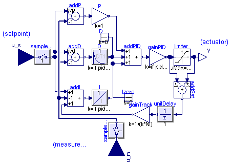
Via parameter controllerType either P, PI, PD, or PID can be selected. If, e.g., PI is selected, all components belonging to the D-part are removed from the block (via conditional declarations). The example model Modelica.Blocks.Examples.PID_Controller demonstrates the usage of this controller. Several practical aspects of PID controller design are incorporated according to chapter 3 of the book:
Besides the additive proportional, integral and derivative part of this controller, the following features are present:
The parameters of the controller can be manually adjusted by performing simulations of the closed loop system (= controller + plant connected together) and using the following strategy:
Initialization
This block can be initialized in different ways controlled by parameter initType. The possible values of initType are defined in Modelica.Blocks.Types.InitPID. This type is identical to Types.Init, with the only exception that the additional option DoNotUse_InitialIntegratorState is added for backward compatibility reasons (= integrator is initialized with InitialState whereas differential part is initialized with NoInit which was the initialization in version 2.2 of the Modelica standard library).
Based on the setting of initType, the integrator (I) and derivative (D) blocks inside the PID controller are initialized according to the following table:
| initType | I.initType | D.initType |
| NoInit | NoInit | NoInit |
| SteadyState | SteadyState | SteadyState |
| InitialState | InitialState | InitialState |
| InitialOutput and initial equation: y = y_start |
NoInit | SteadyState |
| DoNotUse_InitialIntegratorState | InitialState | NoInit |
In many cases, the most useful initial condition is SteadyState because initial transients are then no longer present. If initType = InitPID.SteadyState, then in some cases difficulties might occur. The reason is the equation of the integrator:
der(y) = k*u;
The steady state equation "der(x)=0" leads to the condition that the input u to the integrator is zero. If the input u is already (directly or indirectly) defined by another initial condition, then the initialization problem is singular (has none or infinitely many solutions). This situation occurs often for mechanical systems, where, e.g., u = desiredSpeed - measuredSpeed and since speed is both a state and a derivative, it is natural to initialize it with zero. As sketched this is, however, not possible. The solution is to not initialize u_m or the variable that is used to compute u_m by an algebraic equation.
If parameter limitAtInit = false, the limits at the output of this controller block are removed from the initialization problem which leads to a much simpler equation system. After initialization has been performed, it is checked via an assert whether the output is in the defined limits. For backward compatibility reasons limitAtInit = true. In most cases it is best to use limitAtInit = false.
Extends from Interfaces.PartialSampledBlock (Partial block of Sampled library (icon + default parameters)), Modelica.Blocks.Interfaces.SVcontrol (Single-Variable continuous controller), Interfaces.PartialBlockIcon (Basic graphical layout of discrete/continuous block).
| Type | Name | Default | Description |
|---|---|---|---|
| PID_representation | pidRepresentation | Types.PID_representation.tim... | type of PID representation: k*(1 + 1/Ti/s + Td*s) or (kp + Ti/s + Td*s) |
| SimpleController | controllerType | Modelica.Blocks.Types.Simple... | Type of controller |
| Real | k | 1 | Gain of controller |
| Time | Ti | Time constant of Integrator block [s] | |
| Time | Td | Time constant of Derivative block [s] | |
| Real | kp | 1 | P part parameter of gain representation |
| Real | ki | 1 | I part parameter of gain representation |
| Real | kd | 1 | D part parameter of gain representation |
| Real | yMax | Upper limit of output | |
| Real | yMin | -yMax | Lower limit of output |
| Real | wp | 1 | Set-point weight for Proportional block (0..1) |
| Real | wd | 0 | Set-point weight for Derivative block (0..1) |
| Real | Ni | 0.9 | Ni*Ti is time constant of anti-windup compensation |
| Real | Nd | 10 | The higher Nd, the more ideal the derivative block |
| Initialization | |||
| Boolean | limitsAtInit | true | = false, if limits are ignored during initializiation |
| Real | xi_start | 0 | Initial or guess value value for integrator output (= integrator state) |
| Real | xd_start | 0 | Initial or guess value for state of derivative block |
| Real | y_start | 0 | Initial value of output |
| Advanced options | |||
| BlockTypeWithGlobalDefault | blockType | Types.BlockTypeWithGlobalDef... | Type of block (Continuous/Discrete) |
| MethodWithGlobalDefault | methodType | Types.MethodWithGlobalDefaul... | Type of discretization if discrete block |
| Integer | sampleFactor | 1 | Ts=sampleClock.sampleTime*sampleFactor |
| InitWithGlobalDefault | initType | Types.InitWithGlobalDefault.... | Type of initialization (no init/initial/steady state/output) |
| Type | Name | Description |
|---|---|---|
| input RealInput | u_s | Connector of setpoint input signal |
| input RealInput | u_m | Connector of measurement input signal |
| output RealOutput | y | Connector of actuator output signal |
block LimPID
"P, PI, PD, and PID controller with limited output, anti-windup compensation and setpoint weighting"
import Modelica_LinearSystems2.Controller.Types.InitWithGlobalDefault;
import Modelica.Blocks.Types.SimpleController;
extends Interfaces.PartialSampledBlock;
extends Modelica.Blocks.Interfaces.SVcontrol;
extends Interfaces.PartialBlockIcon;
output Real controlError=u_s - u_m "Control error (set point - measurement)";
parameter Types.PID_representation pidRepresentation=Types.PID_representation.timeConstants
"type of PID representation: k*(1 + 1/Ti/s + Td*s) or (kp + Ti/s + Td*s)";
parameter Modelica.Blocks.Types.SimpleController controllerType=Modelica.Blocks.Types.SimpleController.PID
"Type of controller";
parameter Real k(min=0) = 1 "Gain of controller";
parameter Modelica.SIunits.Time Ti(min=Modelica.Constants.small, start=0.5)
"Time constant of Integrator block";
parameter Modelica.SIunits.Time Td(min=0, start=0.1)
"Time constant of Derivative block";
parameter Real kp=1 "P part parameter of gain representation";
parameter Real ki=1 "I part parameter of gain representation";
parameter Real kd=1 "D part parameter of gain representation";
parameter Real yMax(start=1) "Upper limit of output";
parameter Real yMin=-yMax "Lower limit of output";
parameter Real wp(min=0) = 1 "Set-point weight for Proportional block (0..1)";
parameter Real wd(min=0) = 0 "Set-point weight for Derivative block (0..1)";
parameter Real Ni(min=100*Modelica.Constants.eps) = 0.9
"Ni*Ti is time constant of anti-windup compensation";
parameter Real Nd(min=100*Modelica.Constants.eps) = 10
"The higher Nd, the more ideal the derivative block";
parameter Boolean limitsAtInit=true
"= false, if limits are ignored during initializiation";
parameter Real xi_start=0
"Initial or guess value value for integrator output (= integrator state)";
parameter Real xd_start=0
"Initial or guess value for state of derivative block";
parameter Real y_start=0 "Initial value of output";
Sampler sampler_s(blockType=blockType);
Sampler sampler_m(blockType=blockType);
Modelica.Blocks.Math.Add addP(k1=wp, k2=-1);
Modelica.Blocks.Math.Add addD(k1=wd, k2=-1) if
with_D;
Modelica.Blocks.Math.Add3 addI(k2=-1) if
with_I;
Modelica.Blocks.Math.Gain P(k=1);
Derivative D(k=if pidRepresentation==Types.PID_representation.timeConstants then Td else kd/kp, T=max([Td/Nd,1.e-14]),
blockType=blockType,
initType=if init==Types.Init.SteadyState or
init==Types.Init.InitialOutput then InitWithGlobalDefault.SteadyState else
if init==Types.Init.InitialState then InitWithGlobalDefault.InitialState else
InitWithGlobalDefault.NoInit,
x_start=xd_start,
y_start=y_start,
methodType=Modelica_LinearSystems2.Controller.Types.MethodWithGlobalDefault.StepExact) if
with_D;
Integrator I(k=if pidRepresentation==Types.PID_representation.timeConstants then 1/Ti else kp/ki, y_start=xi_start,
blockType=blockType,
initType=if init==Types.Init.SteadyState then
InitWithGlobalDefault.SteadyState else
if init==Types.Init.InitialState then
InitWithGlobalDefault.InitialState else InitWithGlobalDefault.NoInit,
methodType=Modelica_LinearSystems2.Controller.Types.MethodWithGlobalDefault.StepExact) if
with_I;
Modelica.Blocks.Sources.Constant Izero(k=0) if
not with_I;
protected
parameter Boolean with_I = controllerType==SimpleController.PI or
controllerType==SimpleController.PID;
parameter Boolean with_D = controllerType==SimpleController.PD or
controllerType==SimpleController.PID;
public
Modelica.Blocks.Sources.Constant Dzero(k=0) if
not with_D;
Modelica.Blocks.Math.Add3 addPID;
Modelica.Blocks.Math.Gain gainPID(k=if pidRepresentation==Types.PID_representation.timeConstants then k else kp);
Modelica.Blocks.Math.Add addSat(k1=+1, k2=-1) if
with_I;
Modelica.Blocks.Math.Gain gainTrack(k=1/(k*Ni)) if
with_I;
Modelica.Blocks.Nonlinear.Limiter limiter(
uMax=yMax,
uMin=yMin,
limitsAtInit=limitsAtInit);
UnitDelay unitDelay(blockType=blockType) if with_I;
initial equation
if init ==Modelica_LinearSystems2.Controller.Types.Init.InitialOutput then
y = y_start;
end if;
equation
connect(addP.u1, sampler_s.y);
connect(addI.u1, sampler_s.y);
connect(addD.u1, sampler_s.y);
connect(sampler_m.y, addI.u2);
connect(sampler_m.y, addD.u2);
connect(sampler_m.y, addP.u2);
connect(sampler_s.u, u_s);
connect(sampler_m.u, u_m);
connect(P.u, addP.y);
connect(D.u, addD.y);
connect(I.u, addI.y);
connect(P.y, addPID.u1);
connect(D.y, addPID.u2);
connect(Dzero.y, addPID.u2);
connect(I.y, addPID.u3);
connect(Izero.y, addPID.u3);
connect(gainPID.y, addSat.u2);
connect(gainPID.y, limiter.u);
connect(gainPID.u, addPID.y);
connect(limiter.y, y);
connect(addSat.u1, limiter.y);
connect(unitDelay.u, addSat.y);
connect(gainTrack.y, addI.u3);
connect(unitDelay.y, gainTrack.u);
end LimPID;
 Modelica_LinearSystems2.Controller.UnitDelay
Modelica_LinearSystems2.Controller.UnitDelay

If discrete block, the output y is sampled and is the value of the sampled input signal u at the previous sample instant, where sample time = sampleClock.sampleTime * sampleFactor and sampleClock.sampleTime is defined globally in the outer component sampleClock and sampleFactor is an Integer parameter of component UnitDelay.
If continuous block, the output y is identical to the input u.
Extends from Interfaces.PartialSISO_equality (Partial Single Input Single Output (continuous or discrete) control block of Controller library where usually y=u if continuous block).
| Type | Name | Default | Description |
|---|---|---|---|
| BlockTypeWithGlobalDefault | blockType | Types.BlockTypeWithGlobalDef... | Type of block (Continuous/Discrete) |
| Integer | sampleFactor | 1 | Sample time = sampleFactor * sampleClock.sampleTime |
| Type | Name | Description |
|---|---|---|
| input RealInput | u | Continuous or discrete input signal of block |
| output RealOutput | y | Continuous or discrete output signal of block |
block UnitDelay
"Delay the input by a multiple of the base sample time if discrete block or y=u if continuous block"
extends Interfaces.PartialSISO_equality;
protected
Internal.DiscreteUnitDelay discretePart(sampleFactor=sampleFactor) if
not continuous "Discrete unit delay";
equation
if continuous then
y = u;
end if;
connect(u, discretePart.u);
connect(y, discretePart.y);
end UnitDelay;
 Modelica_LinearSystems2.Controller.ADconverter
Modelica_LinearSystems2.Controller.ADconverter
If discrete block, the output y is sampled according to sample time sampleClock.sampleTime * sampleFactor, where sampleClock.sampleTime is defined globally in the outer component sampleClock and sampleFactor is an Integer parameter of component Sampler.
The sampled output signal is computed by limiting the input u with the provided y_min and y_max borders and by rounding according to the provided precision of the AD converter defined via parameter bits (e.g. bits = 12 is the precision of simple AD converters).
If continuous block, the output y is identical to the input u, but is limited by y_min and y_max.
Extends from Interfaces.PartialSISO_equality (Partial Single Input Single Output (continuous or discrete) control block of Controller library where usually y=u if continuous block).
| Type | Name | Default | Description |
|---|---|---|---|
| Real | y_max | Upper limit of output signal | |
| Real | y_min | Lower limit of output signal | |
| Integer | bits | Number of bits (=0 means no quantization error) | |
| BlockTypeWithGlobalDefault | blockType | Types.BlockTypeWithGlobalDef... | Type of block (Continuous/Discrete) |
| Integer | sampleFactor | 1 | Sample time = sampleFactor * sampleClock.sampleTime |
| Type | Name | Description |
|---|---|---|
| input RealInput | u | Continuous or discrete input signal of block |
| output RealOutput | y | Continuous or discrete output signal of block |
block ADconverter "Analog to digital converter (including sampler)"
parameter Real y_max "Upper limit of output signal";
parameter Real y_min "Lower limit of output signal";
parameter Integer bits(min=0)
"Number of bits (=0 means no quantization error)";
extends Interfaces.PartialSISO_equality;
protected
Internal.DiscreteADconverter discretePart(y_max=y_max, y_min=y_min, bits=bits,
sampleFactor=sampleFactor) if
not continuous "AD converter";
equation
if continuous then
y = if u > y_max then y_max else if u < y_min then y_min else u;
else
connect(u, discretePart.u);
connect(y, discretePart.y);
end if;
end ADconverter;
 Modelica_LinearSystems2.Controller.DAconverter
Modelica_LinearSystems2.Controller.DAconverter
| Type | Name | Default | Description |
|---|---|---|---|
| Real | y_max | Upper limit of output signal | |
| Real | y_min | Lower limit of output signal | |
| Integer | bits | Number of bits (=0 means no quantization error) | |
| Boolean | unitDelay | true | = true, if one sample period delay, = false, if computing time not modelled |
| BlockTypeWithGlobalDefault | blockType | Types.BlockTypeWithGlobalDef... | Type of block (Continuous/Discrete) |
| Integer | sampleFactor | 1 | Sample time = sampleFactor * sampleClock.sampleTime |
| Type | Name | Description |
|---|---|---|
| input RealInput | u | Continuous or discrete input signal of block |
| output RealOutput | y | Continuous or discrete output signal of block |
block DAconverter
"Digital to analog converter (including zero order hold)"
parameter Real y_max "Upper limit of output signal";
parameter Real y_min "Lower limit of output signal";
parameter Integer bits(min=0)
"Number of bits (=0 means no quantization error)";
parameter Boolean unitDelay=true
"= true, if one sample period delay, = false, if computing time not modelled";
extends Interfaces.PartialSISO_equality;
protected
Internal.DiscreteDAconverter discretePart(
y_max=y_max,
y_min=y_min,
bits=bits,
unitDelay=unitDelay,
sampleFactor=sampleFactor) if
not continuous "AD converter";
equation
if continuous then
y = if u > y_max then y_max else if u < y_min then y_min else u;
else
connect(u, discretePart.u);
connect(y, discretePart.y);
end if;
end DAconverter;
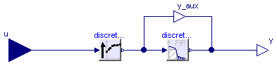
This block decreases the sampling time from the sampling time of the input signal (= inputSampleFactor*sampleClock.sampleTime) to the sampling time of the output signal (= outputSampleFactor*sampleClock.sampleTime). This is performed by linear interpolation between the current and the last sample leading to a delay of one input sampling period. Optionally, the resulting signal is filtered with a mean value FIR-filter, in order to remove undesired frequencies introduced by the linear interpolation. In most cases it is adviceable to utilize this filter. Note, the inputSampleFactor must be an integer multiple of the outputSampleFactor.
This block is demonstrated with example Examples.Interpolator leading to the following result when filtering a sine-signal with "continuous" (interpolator1.y), "discrete, unfiltered" (interpolator2.y) and "discrete, filtered" (interpolator3.y) Interpolator:

Extends from Icons.PartialBlockIcon (Basic graphical layout of discrete/continuous block).
| Type | Name | Default | Description |
|---|---|---|---|
| BlockTypeWithGlobalDefault | blockType | Types.BlockTypeWithGlobalDef... | Type of block (Continuous/Discrete) |
| Integer | inputSampleFactor | 1 | Input sample time = inputSampleFactor * sampleClock.sampleTime |
| Integer | outputSampleFactor | 1 | Output sample time = outputSampleFactor * sampleClock.sampleTime (inputSampleFactor must be an integer multiple of outputSampleFactor) |
| Boolean | meanValueFilter | true | = true and discrete block, linearly interpolated signal is filtered by mean value filter |
| Type | Name | Description |
|---|---|---|
| input RealInput | u | Continuous or discrete input signal of block |
| output RealOutput | y | Continuous or discrete output signal of block |
block Interpolator
"Increasing the sampling frequency with linear interpolation and optional mean value filtering"
extends Icons.PartialBlockIcon(cont=continuous);
import Modelica_LinearSystems2.Controller.Types;
parameter Modelica_LinearSystems2.Controller.Types.BlockTypeWithGlobalDefault
blockType = Types.BlockTypeWithGlobalDefault.UseSampleClockOption
"Type of block (Continuous/Discrete)";
final parameter Boolean continuous = blockType == Types.BlockTypeWithGlobalDefault.Continuous or
blockType == Types.BlockTypeWithGlobalDefault.UseSampleClockOption and
sampleClock.blockType == Types.BlockType.Continuous
"= true, if continuous block, otherwise discrete block";
parameter Integer inputSampleFactor(min=1)=1 if not continuous
"Input sample time = inputSampleFactor * sampleClock.sampleTime";
parameter Integer outputSampleFactor(min=1)=1 if not continuous
"Output sample time = outputSampleFactor * sampleClock.sampleTime";
parameter Boolean meanValueFilter = true
"= true and discrete block, linearly interpolated signal is filtered by mean value filter";
Modelica.Blocks.Interfaces.RealInput u
"Continuous or discrete input signal of block";
Modelica.Blocks.Interfaces.RealOutput y
"Continuous or discrete output signal of block";
protected
outer SampleClock sampleClock "Global options";
Internal.DiscreteInterpolator discreteInterpolator(
outputSampleFactor = outputSampleFactor,
inputSampleFactor = inputSampleFactor) if not continuous;
Internal.DiscreteFIR discreteFIR(sampleFactor=outputSampleFactor, a=fill(1/
div(inputSampleFactor, outputSampleFactor), div(inputSampleFactor,
outputSampleFactor))) if not continuous and meanValueFilter;
Modelica.Blocks.Interfaces.RealOutput y_aux if not continuous and not meanValueFilter
"Dummy port, if no filtering desired";
equation
if continuous then
y = u;
end if;
connect(discreteInterpolator.u, u);
connect(discreteInterpolator.y, discreteFIR.u);
connect(discreteFIR.y, y);
connect(discreteInterpolator.y, y_aux);
connect(y_aux, y);
end Interpolator;
 Modelica_LinearSystems2.Controller.MatrixGain
Modelica_LinearSystems2.Controller.MatrixGain

This block is similar to Modelica.Blocks.Math.MatrixGain. Additionally this block offers to load the matrix from a MATLAB-file. It computes output vector y as product of the gain matrix K with the input signal vector u:
y = K * u;
Example:
parameter: K = [0.12 2; 3 1.5]
results in the following equations:
| y[1] | | 0.12 2.00 | | u[1] |
| | = | | * | |
| y[2] | | 3.00 1.50 | | u[2] |
Extends from Modelica.Blocks.Interfaces.MIMO (Multiple Input Multiple Output continuous control block), Interfaces.PartialBlockIcon (Basic graphical layout of discrete/continuous block).
| Type | Name | Default | Description |
|---|---|---|---|
| Integer | nin | size(K2, 2) | Number of inputs |
| Integer | nout | size(K2, 1) | Number of outputs |
| Boolean | matrixOnFile | false | true if matrix should be read from file |
| String | fileName | Modelica_LinearSystems2.Data... | |
| String | matrixName | "K" | Name of the matrix |
| Real | K[:, :] | [1] | Matrix gain |
| Type | Name | Description |
|---|---|---|
| input RealInput | u[nin] | Connector of Real input signals |
| output RealOutput | y[nout] | Connector of Real output signals |
block MatrixGain
"Output the product of a gain matrix with the input signal vector. The matrix can be loaded from a file optionally"
extends Modelica.Blocks.Interfaces.MIMO(final nin=size(K2, 2), final nout=
size(K2, 1));
extends Interfaces.PartialBlockIcon;
parameter Boolean matrixOnFile=false
"true if matrix should be read from file";
parameter String fileName=Modelica_LinearSystems2.DataDir + "k.mat";
parameter String matrixName="K" "Name of the matrix";
parameter Real K[:,:]=[1] "Matrix gain";
protected
parameter Integer mn[2]=if matrixOnFile then readMatrixSize(fileName, matrixName) else size(K);
parameter Integer m=mn[1];
parameter Integer n=mn[2];
parameter Real K2[:,:]=if matrixOnFile then
Modelica_LinearSystems2.Math.Matrices.Internal.readMatrixGain(
fileName,
matrixName,
m,
n) else K;
equation
y = K2*u;
end MatrixGain;
 Modelica_LinearSystems2.Controller.Noise
Modelica_LinearSystems2.Controller.Noise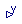
If discrete block, the output y is sampled according to sample time sampleClock.sampleTime * sampleFactor, where sampleClock.sampleTime is defined globally in the outer component sampleClock and sampleFactor is an Integer parameter of component Noise. At every sample time, a random output signal y in the range y_min .. y_max is generated, where y_min and y_max are parameters. A typical noise signal is shown in the next figure:

The Integer[3] parameter vector firstSeed is used to initialize the basic random number generator. The 3 elements of firstSeed need to be in the range [0, 255]. The use of the same seed vector will lead to the same sequence of numbers when these are computed serially. This is usually not desired. Therefore, for every usage of block Noise a different firstSeed should be defined.
If continuous block, the output y = 0.0, i.e., no noise signal
is generated. The reason is that the noise can only reasonably be
used in a simulation if it is a discrete signal, i.e., changes
its value only at sample instants. Since a continous block is usually
used to speed up the simulation, the noise should also be turned
off because it will otherwise significantly limit the
maximum step size of the integrator.
This noise generator is based on a function that generates a random real number uniformely in the semi-open range [0.0, 1.0). The function uses the standard Wichmann-Hill generator, combining three pure multiplicative congruential generators of modulus 30269, 30307 and 30323. Its period (how many numbers it generates before repeating the sequence exactly) is 6,953,607,871,644. While of much higher quality than the rand() function supplied by most C libraries, the theoretical properties are much the same as for a single linear congruential generator of large modulus.
Extends from Interfaces.PartialBlockIcon (Basic graphical layout of discrete/continuous block).
| Type | Name | Default | Description |
|---|---|---|---|
| Real | y_min | Lower limit of noise band | |
| Real | y_max | Upper limit of noise band | |
| Integer | firstSeed[3] | {23,87,187} | Integer[3] defining random sequence; required element range: 0..255 |
| BlockTypeWithGlobalDefault | blockType | Types.BlockTypeWithGlobalDef... | Type of block (Continuous/Discrete) |
| Integer | sampleFactor | 1 | Ts=sampleClock.sampleTime*sampleFactor |
| Type | Name | Description |
|---|---|---|
| output RealOutput | y | Discrete output signal of block |
block Noise
"Block that generates a uniform distributed noise output signal at sample instants if discrete and y=0 if continuous"
extends Interfaces.PartialBlockIcon;
parameter Real y_min if not continuous "Lower limit of noise band";
parameter Real y_max if not continuous "Upper limit of noise band";
parameter Integer firstSeed[3](
each min=0,
each max=255) = {23,87,187} if not continuous
"Integer[3] defining random sequence; required element range: 0..255";
parameter Types.BlockTypeWithGlobalDefault blockType=Types.BlockTypeWithGlobalDefault.UseSampleClockOption
"Type of block (Continuous/Discrete)";
final parameter Boolean continuous=blockType == Types.BlockTypeWithGlobalDefault.Continuous
or blockType == Types.BlockTypeWithGlobalDefault.UseSampleClockOption
and sampleClock.blockType == Types.BlockType.Continuous
"= true, if continuous block, otherwise discrete block";
parameter Integer sampleFactor(min=1) = 1 if
not continuous
"Ts=sampleClock.sampleTime*sampleFactor";
Modelica.Blocks.Interfaces.RealOutput y "Discrete output signal of block";
protected
outer SampleClock sampleClock "Global options";
Internal.DiscreteNoise discretePart(
y_min=y_min,
y_max=y_max,
firstSeed=firstSeed,
sampleFactor=sampleFactor) if not continuous "Discrete noise";
equation
if continuous then
y = 0.0;
end if;
connect(y,discretePart.y);
end Noise;